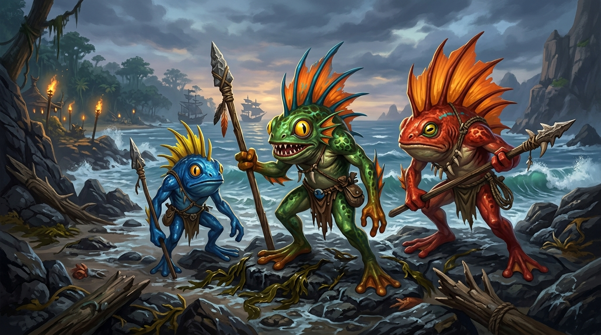

Orígenes y Hábitat de los Murlocs
Los murlocs son una antigua especie anfibia y semi-inteligente que puebla las costas marítimas, ciénagas y ríos de Azeroth. Descendientes directos de los primitivos gorlocs de Rasganorte, estas criaturas marinas han perdurado a lo largo de incontables edades, adaptando su biología al agua salada y dulce por igual.
Viven en asentamientos comunales conocidos como aldeas costeras, erigidas con maderas flotantes, restos de naufragios, conchas marinas y algas entrelazadas. Su anatomía combina características de batracios y peces, con aletas dorsales espinosas, grandes ojos adaptados a la penumbra abisal y una piel húmeda que requiere hidratación constante para sobrevivir.
Galería Ilustrada de Especies Costeras
Variedades y Entornos Naturales de Azeroth

Documental: El Rugido de las Costas
Breve documento audiovisual sobre el comportamiento territorial, origen biológico y el llamado comunal de los murlocs con subtítulos sincronizados en español.
Cultura Tribal, Deidades y el Rugido Rwlrwlrwlrwl
A pesar de su aparente sencillez tecnológica, las tribus murloc poseen un complejo sistema espiritual encabezado por oráculos y chamanes de las olas. Profesan reverencia a titánicas entidades acuáticas y al mismísimo Neptulon el Cazador de Mareas, implorando tempestades favorables y abundante pesca.
Su rasgo más temido y emblemático es su alarma acústica: el inconfundible chillido gorgoteante «Rwlrwlrwlrwl» (transcrito a menudo como Aaaaaughibbrgubugbugrguburgle). Esta vocalización no solo alerta a los centinelas cercanos, sino que desata una respuesta colectiva inmediata capaz de arrollar a cualquier intruso que perturbe su territorio.
Tribus Reconocidas en Azeroth
- Aleta Fría: Asentados en las gélidas tundras y costas boreales.
- Rompeolas: Expertos buceadores de las islas del Mare Magnum.
- Branquia Azur: Habitantes ancestrales de las marismas de los Humedales.